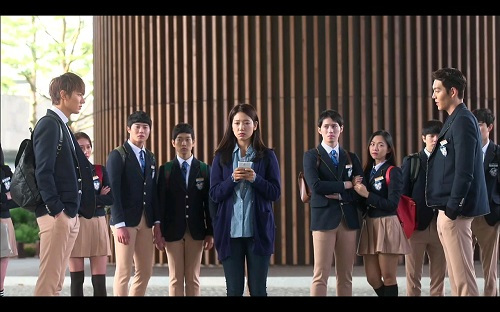
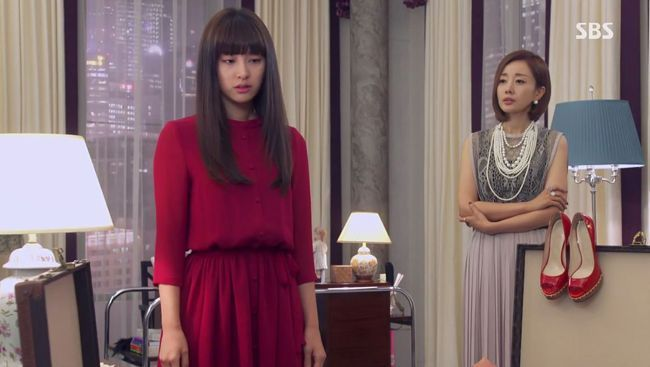
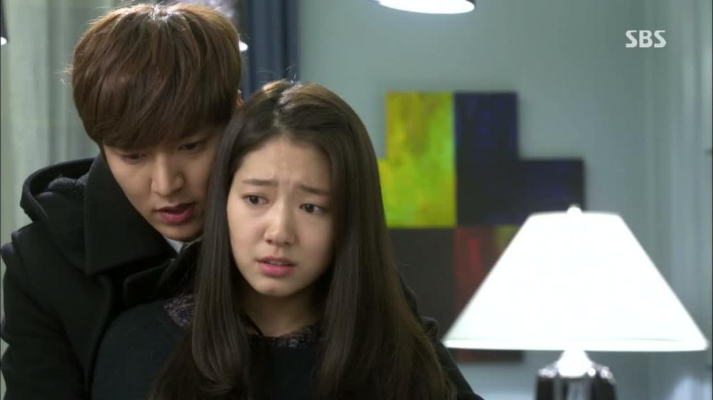
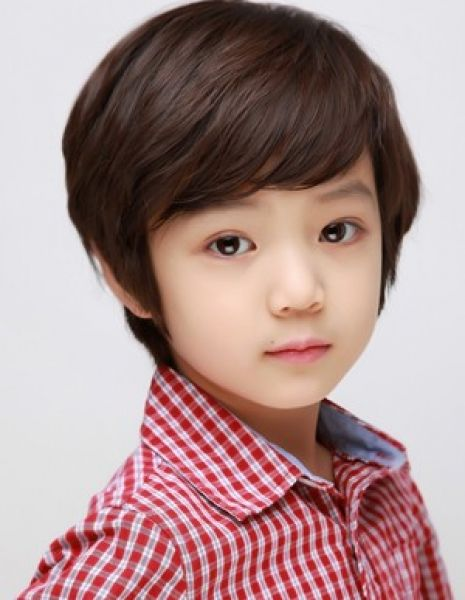
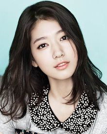
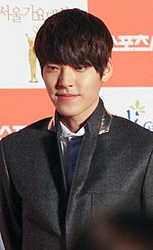
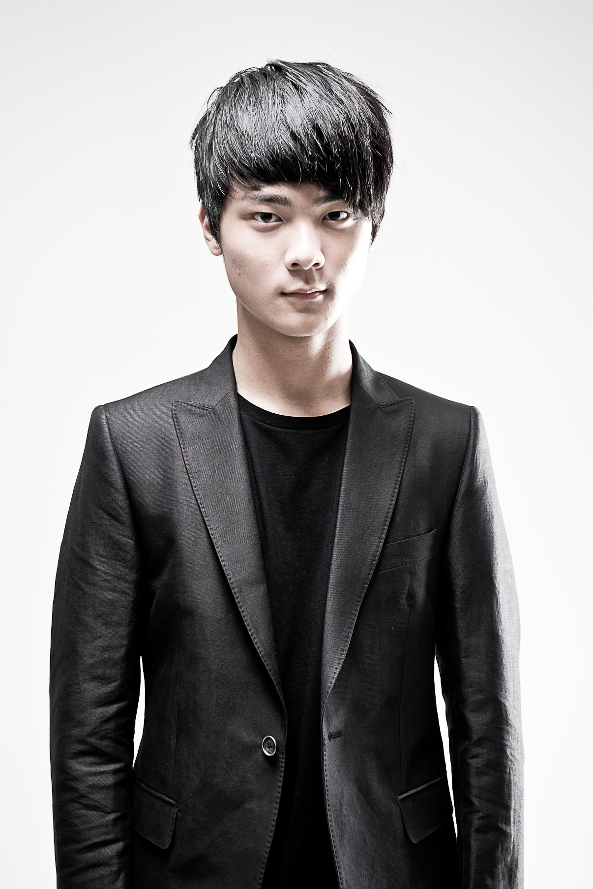

The Heirs (왕관을 쓰려는 자, 그 무게를 견뎌라 – 상속자들), also known as The Inheritors, is a South Korean television series starring Lee Min-ho, Park Shin-hye and Kim Woo-bin. Written by Kim Eun-sook, the drama is set in a high school populated by the privileged and uber-rich. It aired on SBS from October 9 to December 12, 2013.
Scene Photo
  Movie Info
Children of the super-elite class bear the burden of success as they are being groomed as heirs to their family business empires despite only being in high school. Kim Tan (Lee Min Ho) is the heir to the Empire Group, a family conglomerate business. But he lives under the constant shadow of his older half-brother, Kim Won (Choi Jin Hyuk), who is already an accomplished young executive in the family business. Despite being betrothed to the wealthy and haughty Rachel Ryu (Kim Ji Won), a hotel heiress, Tan falls in love with Cha Eun Sang (Park Shin Hye), the daughter of his family's housekeeper. Eun Sang and her best friend, Yoon Chan Young (Kang Min Hyuk), the son of Empire Group's secretary, did not grow up like their families' employer did, but they get embroiled in their lives nonetheless. Eun Sang gets caught in a love triangle with Tan and Choi Young Do (Kim Woo Bin), the condescending heir to a luxury resort conglomerate while Chan Young falls in love with Tan's ex-girlfriend, Lee Bo Na (Krystal Jung), the socialite daughter of a major entertainment executive. Can a romance survive between the haves and the have-nots?
- Genre:Romance, Drama, Teen
- Director:Kang Shin-hyo, Boo Sung-chul
- Writer: Kim Eun-sook
- Original Release: October 9 – December 12, 201316
- No. of Episodes: 20 Episodes
Cast
 Lee Min-ho as Kim Tan, Jung Chan-woo as young Kim Tan, Jeon Jin-seo as child Kim TanThe future heir to the Jeguk (meaning "Empire") Group.[19] He is the son of his father's mistress, but is listed in the family registry as the second son of the wife in order to be a legitimate heir. Though hot-headed and at times immature, Kim Tan is warm-hearted and honest. Although he is engaged to Rachel Yoo, he is attracted to Cha Eun-sang at first sight and falls in love with her despite her poor background.
 Park Shin-hye as Cha Eun-sangDown-to-earth and somewhat cynical, Eun-sang diligently works part-time jobs to support herself and her mother after her sister leaves for the U.S. She lives in Kim Tan's home, since her mother is a live-in housekeeper of the Kim family. She is enrolled in Jeguk High School on a welfare scholarship given by President Kim.
  Kim Woo-bin as Choi Young-do, Yang Hyun-mo as young Choi Young-doThe heir to the Zeus Hotel Group. Known for his cunning intellect and volatile manners, he is feared by his classmates, whom he bullies.[28] He is formerly best friends with Kim Tan, but a misunderstanding made them enemies. Young-do begins picking on Cha Eun-sang to irritate Tan but he soon realizes that's not the only reason she's always on his mind.
Production
- Executive producer(s):
- Yoon Ha-rim
- Producer(s):
- Shin Bong-chul
- Lee Sung-hoon
- Production location(s):
- South Korea
- United States